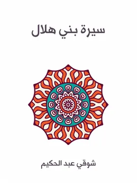

سيرة بني هلال

قراءة عربية أصلية محددة النطاق في الصفحات 9 إلى 14 من ملف PDF المرتبط، وليست تلخيصا كاملا للكتاب. نناقش ما تدعمه هذه المقاطع فقط.
بركات يصير أبا زيد: من تربية الكاهن إلى سلامة الهلالي
يفتتح المقطع ببناء البطل: يوكل أمر تعليم بركات، أو أبي زيد الهلالي، إلى كاهن أو معلم، فيعلمه العلوم والحرف واللغات والحيل والمكائد التي اشتهر وتفوق بها: ولسان سرياني تصير مشير، ولساني عبراني اليهود بينفعك، وكذا الطب والرياضيات والكيمياء والصباغة والمعادن: والطب أيضًا داني الأعلمك، وأعلمك علم الصباغات كلها، وعلم الحساب وكل علم ظهير، تصبغ لروحك ما تريد يا أمير. ثم تدور المغامرة الأولى: يهاجم الهلاليون بلاد الزحلان، فيتصدى لهم بركات ويأخذ والده أسيرًا، ويعترف له الهلاليون بشجاعته ويطلقون عليه اسم «سلامة»، ويُعجب به الزحلان فيزوجه بابنته «غصن البان»، وتعلو مكانته في أعين الهلاليين الذين رأوا مهابته وذكاءه ومهارته آخذة في الزيادة، فتعارفوا عليه باسم «أبي زيد الهلالي سلامة». وبعد أن تفرغ السرية من سرد حروب الهلاليين مع الزحلان تنتقل إلى جيل سرحان، وتحدثنا عن خبر تعرفه بشما ووقوعهما في أسر الإفرنج ونجاتهما بحيلة من تلك الحيل التي اشتهر بها الهلاليون خاصة أبا زيد؛ وشما هنا في موقع الكاهنة التي تقود المهاجرين مشيرة بالحرب والسلم والمشورة.
زاوية وحدود القراءة
قراءة موجزة من ص ٩ إلى ص ١٤ من أصل ١٣٠ صفحة، تعرض المقدمة، لا الكتاب كاملًا.
الطبعة والقراءة
هذه النسخة من الكتاب صادرة ومتاحة مجانًا بموجب اتفاق قانوني بين مؤسسة هنداوي وأسرة السيد الدكتور شوقي عبد الحكيم.
تنزيل PDF المجاني ↓ القراءة والمصدر الرسمي ↗